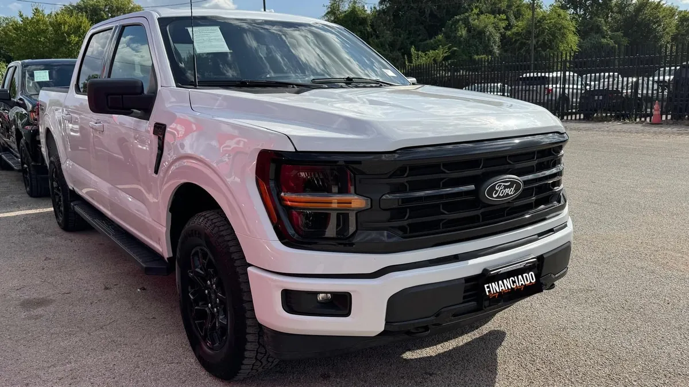

2025 Ford F-150 5.0 V8 FX4
Silver • ID CCH-508

1/7General
| Year | 2025 |
|---|---|
| Make | Ford |
| Model | F-150 5.0 V8 FX4 |
| Type | Truck |
| Color | Silver |
| Mileage | 41,000 miles |
| Drivetrain | 4x4 |
Model specifications
| Engine | 2.7L EcoBoost V6 |
|---|---|
| Horsepower | 325 hp (2.7L; 400 the 5.0L and the 3.5L, 430 the hybrid) |
| Torque | 400 lb-ft (2.7L; 410 the 5.0L, 500 the 3.5L, 570 the hybrid) |
| Transmission | 10-speed automatic |
| Model drivetrain | 4x2 or 4x4 (varies depending on unit) |
| Fuel economy (MPG) | City: varies: 19 (2.7L), 16 (5.0L 4x4), 17 (3.5L). Highway: varies: 25 (2.7L), 24 (5.0L 4x4), 25 (3.5L) |
| Fuel | Gasoline (hybrid optional) |
| Max towing | 13500 (max; 12900 with 5.0L; varies depending on unit) |
| Seats | up to 6 |
| Body style | Pickup |
Typical figures for this year and model, taken from public sources (manufacturer, KBB, Edmunds). The dealer confirms the exact engine, drivetrain and equipment of this unit.
Visible in the photos / from the listing name
- 4x4
Great for
For anyone who needs a truck for work and everyday driving.
Year, mileage and features come from the inventory data; confirm this unit's exact details with the dealer. This sheet shows no prices: the dealer provides them in writing.